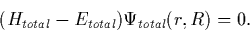
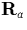
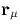
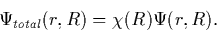
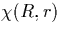

`The man who makes no mistakes does not usually make anything.'Edward John Phelps (1822-1900)
Electronic structure calculations attempt to determine the relationship between a system of ions and their electrons. In order to tackle problems of a useful size, given our current computational limits, it is necessary to make a number of assumptions. In the following chapter I will attempt to describe the various methods and assumptions people have used, ending with DFT/LDA that lies at the core of AIMPRO.
We assume that the ground state of a given system is determined by the time independent, non-relativistic many-body Schrödinger equation,
|  | (1) |
Htotal, the many body Hamiltonian, is defined in terms of kinetic (T) and potential (V) terms for ions (i) of mass Ma and charge Za at sites , and electrons (e) at sites ,
However this equation is insoluble for all except the most simple systems. We therefore invoke the Born-Oppenheimer approximation. This assumes that on the time scale at which the ions move, the electrons are able to respond instantaneously. Therefore the ionic wavefunction is independent of the electrons, and we can split the wavefunction of the system into the product of ionic and electronic terms
|  | (2) |
We can then eliminate the co-dynamic terms from the equation for
 and thus solve the Schrödinger equation for the electronic
wavefunction only, given a set of fixed atomic coordinates.
and thus solve the Schrödinger equation for the electronic
wavefunction only, given a set of fixed atomic coordinates.
In practise the ions and electrons are not decoupled and there is also a similar equation for  that should include ionic/electronic coupling. However this term is only relevant for near degenerate ground states where additional effects such as Jahn-Teller distortions become important. These effects are not important in this study.